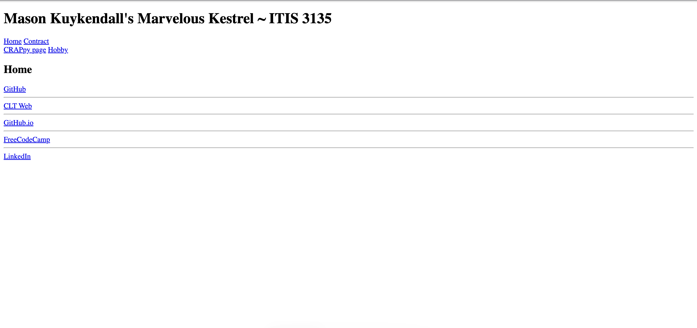

Peer Review 1

File Management
No spaces / No uppercase: Mostly good with index.html, contract.html,
and the hobby/ folder, but the "CRAPpy page" link points to a file with uppercase letters
(e.g., CRAP.htm). File names should be all lowercase with no uppercase characters per
the checklist.
File extensions: The CRAPpy link uses .htm instead of the standard
.html. Recommend renaming for consistency.
HTML/CSS Validation
The Accumulus floater on the home page is reporting "HTML: 1 errors." Per the checklist,
all pages must validate with no errors or warnings — please run the page through the W3C
validator and clean it up.
Design Standards
Don't underline non-links / Proper button styling: Looks fine;
underlines are limited to actual anchor links.
Brand everything (consistent branding): The site brand "Marvelous Kestrel"
appears in the header on the main pages, but the hobby sub-site swaps to "Book Binding" as
the H1 and uses a totally different visual style — there's no consistent brand thread
carrying across. The page
<title> on the hobby page is also just
"Hobbies" rather than including the site brand and page name.
Link to external files: Good — CSS is linked externally via the
Accumulus stylesheet.
Clean up images: The selfie on the About Me section appears to be
displayed at native phone-camera resolution; consider resizing the actual image file
rather than letting the browser/CSS scale it.
Page Structure Checklist
Header / Main / Footer semantic elements: Present on the main
pages — good use of
<header>, <nav>,
<main>, <footer>.
Header contents: The site/brand H1 is there, but the required
"Student Name * Course ID Course Name" line is not present in the header.
Main: The home page's
<main> only contains an H2
of "Home" and nothing else — there's no actual content on the landing page, which feels
empty for a graded site.
Footer requirements: This is the biggest issue — the footer is missing
the "Designed by…" text, the HTML validation button/link, and the CSS validation
button/link. The nav menu in the footer is also not present (only external profile
links). All four are required by the checklist.
Design Requirements (CRAP, Contrast, Fonts)
Sufficient contrast: The hobby page has a serious contrast problem —
the dull-yellow text on the orange-red background is very hard to read (failing WCAG AA
in several spots). I'd recommend darkening the text or lightening/changing the background.
CRAP principles: Repetition is inconsistent between the main site
(default browser styles, blue underlined links) and the hobby site (heavily styled).
The two halves don't feel like one site.
Site colors and fonts using standard CSS: OK on the hobby page, but
the main site is essentially unstyled — adding a shared stylesheet would help with
Repetition and overall polish.
Required Pages
Home (index): Present, but very sparse — basically just navigation.
Introduction page: I couldn't find a dedicated Introduction page in
the navigation. This is a required standard page and should include the introduction content.
Contract page: Present and properly worded.
Topic/Hobby site: Present at /hobby/ with multiple sections — nice job
using
:target to swap sections; that's a creative technique.
Coding Standards
Indentation / Comments: Code I could see looks reasonably clean,
but the validator errors should be cleaned up.
Accessibility / alt text: The Accumulus widget images have empty alts
(those are external — not your fault), but be sure all of your own
<img> tags have meaningful alt attributes.
Stop / Start / Continue
Stop
- Using uppercase letters and .htm for the CRAPpy page filename
- Letting the page ship with HTML validation errors
- Using low-contrast color combos on the hobby page
Start
- Adding the required footer items ("Designed by…", HTML and CSS validator buttons, footer nav)
- Building out a dedicated Introduction page
- Carrying a consistent brand/style across the main site and the hobby sub-site
Continue
- Using semantic HTML5 elements (header/nav/main/footer)
- The creative
:target-based section navigation on the hobby page - The personal photo and warm tone in the About Me section
Overall Assessment
The bones are here and the hobby section shows real personality, but the home page needs content, the footer is missing required elements, and the validation errors and contrast issues need to be addressed before this is checklist-complete. Keep going — you're close!